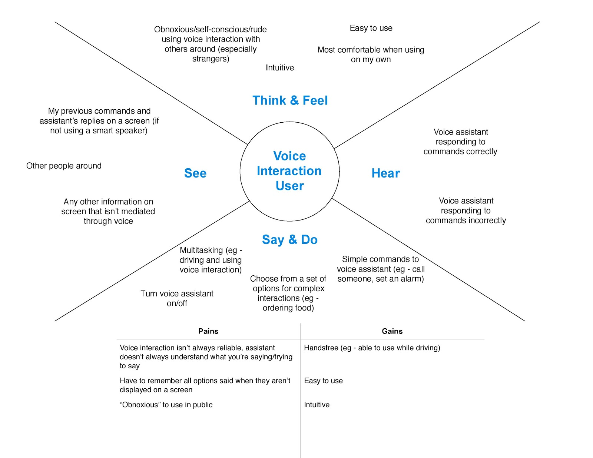
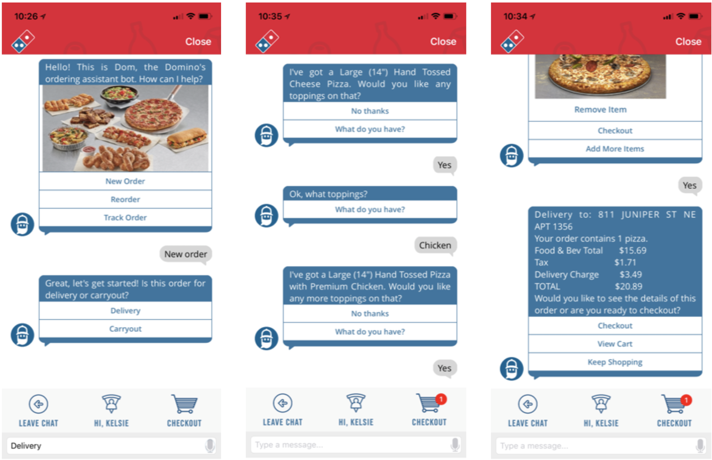
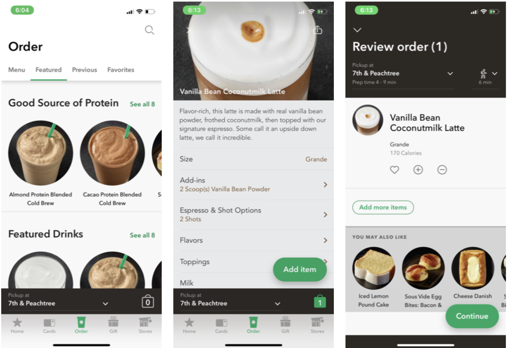
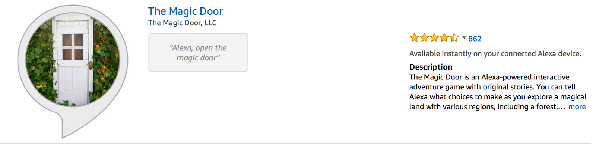
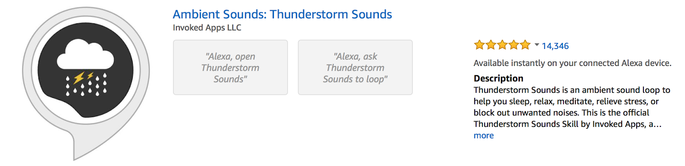
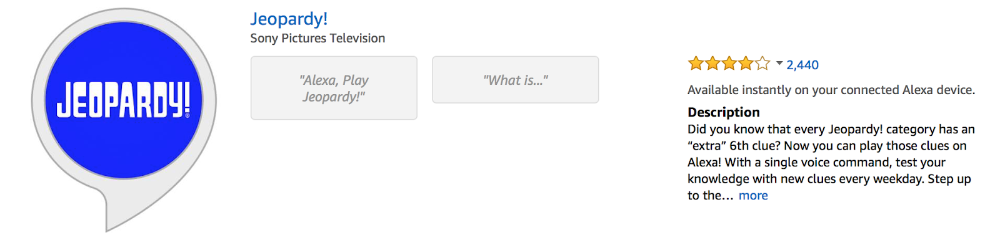
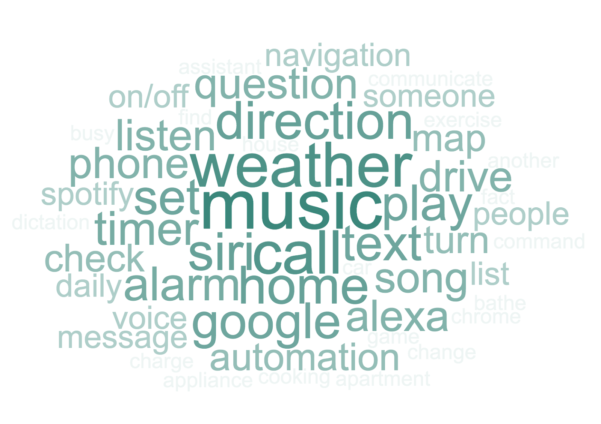
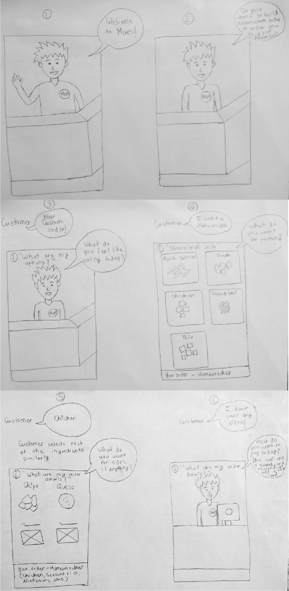
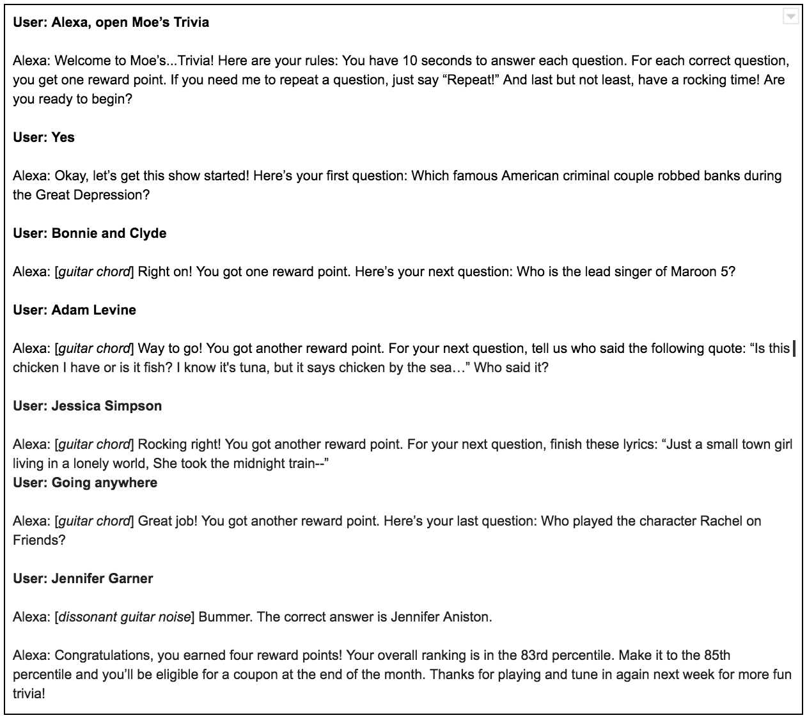

Overview
The Problem
The Children's Museum of Atlanta has a lot of great exhibits in a vast variety of learning concepts, but their new area in science and engineering was lacking in engaging exhibits. The CMoA asked Georgia Tech students to design and create museum exhibit concepts that embodied curiosity, creativity, and STEM learning concepts to enhance the new science and engineering area of the museum.
The Solution
Our team designed the Molecule Forest: an interactive exhibit that subtly instills broads concepts of atoms and molecule creation. The exhibit is mostly designed to create a collaborative medium for children to practice motor skills, teamwork skills, critical thinking skills, all while learning a more complex concept in science.
My Roles
• Visual Designer
• Research Analyst
My Team
• Me
• Mika Munch
• Chris Chen
Methods Used
• Concept Research
• Iterative Design
• Usability Testing
Research Process
Visit to Children's Museum of Atlanta
As a part of our initial research, we made a visit to the Children's Museum of Atlanta to talk with their executives about the museum, their needs, and their pain points. We arrived before the museum was open to discuss the exhibits and take pictures, and then we stayed when the museum opened to observe how the museum guests interacted with their current exhibits. We took notes about what we saw was working and what was not working with the exhibits in the museum. This would help inform our design decisions later.

Empathy Map
Taking our survey results, we also created empathy maps to understand two different types of groups: Moe's customers and voice interaction users.
Moe's Customers

Voice Interaction Users
Competitive Analysis
Taking our survey results, we decided to delve into the realm of Alexa Skills and popular voice ordering technologies in order to understand what works for these technologies and how our team could gain a better understanding on how Moe's can fit into voice technologies. We also conducted task analyses on some of these systems to help better understand how they worked.
Domino's "Dom" Mobile Voice Ordering Assistant
Wingstop Voice Ordering Alexa Skill

Starbucks Voice Ordering Alexa Skill + App
Magic Door Alexa Skill
Ambient Sounds: Thunderstorm Sounds Alexa Skill
Jeopardy! Alexa Skill
Takeaways from Competitive Analysis
• Voice interaction technologies can be extremely complex or extremely simple
• Voice interaction does not have to be disembodied—it can be grounded with visuals
• Voice interaction can be fun and interactive in novel ways
• Chunking information in voice interaction technology can save time
• Linking voice technology to an existing account solves some logistical issues like payment and addresses
• Offering very important features upon start-up can help users be aware of what’s possible
• Use familiar attributes can help users better familiarize themselves even when using a new technology
Pivot!!
After discussing the results from our competitive analysis, we realized that there was a fundamental issue with the way we were approaching this problem. Currently, we had been approaching the problem from a "top-down" approach, that is, figuring out how Moe's can fit into voice. After lots of discussion, we knew that Moe's could really only fit into voice through only a few means - including food and ordering. Based off of our research, we knew that voice ordering was not very well received, so we were stumped on other ways that Moe's could fit into voice.
After this discussion, we decided on a better approach. It made it easier for our team to think of design ideas based off of our research if we looked at it from a "bottom-up" approach, that is, figuring out ways that voice can fit into Moe's. This mentality freed ourselves to think outside of the box on the ways that popular voice technology ideas can be incorporated into the Moe's brand.
How could Moe's fit into voice interactions?
How could voice interactions fit into Moe's?
From this point forward, we fixated our research on this new approach, which would help us to more freely think about the problem and come up with solutions.
Follow-up Survey from Pivot
After our pivot, we decided to conduct another survey to ask more about the "Why" behind voice interaction, instead of focusing our energy on Moe's experiences and food ordering. We had 103 participants for this survey.
Findings
What's your favorite thing that you use voice technology for?
Think about the last time you used a voice technology. Where were you when you used it?

Is there anything else you would like to add about why you use voice interaction technology?

Takeaways
• Our voice technology needs to be simple. This is because participants most often use voice technologies for simple tasks, such as playing music, checking the weather, asking questions, calling and texting, asking for directions, and setting an alarm
• Our interactions do not necessarily need to be private, since participants use voice technologies both alone and with people
• Convenience and entertainment are two key reasons why our participants used voice technologies, so catering our design concepts around these ideas would be best
Design Process
Concept Creation
We designed 3 concepts in order to conduct feedback sessions for which concept potential users would like best.
Concept 1: Moe's Voice Ordering
Concept 2: Moe's Trivia
Concept 3: Moe's Burrito Quest

Feedback Session 1: Choosing a Concept
In this feedback session, we ran through the three concepts with our participants using a script interaction involving one of our team members as "Alexa" and the participant as the user, using the scripts and pictures found above. Here are our results.
4Participants
3Concepts
Moe's Voice Ordering
Impressions
• Could relate to online ordering
• Not sure when using voice for ordering could be useful over traditional ordering
Likes
• Simulation of the Moe’s in-store experience
• Visual component allows food ordering without voice interaction
Dislikes
• Voice interaction makes the process of ordering online tougher
• Listening to a lot of unnecessary steps sometimes
Changes
• Personalizing the experience
• Flexibility in navigation
Moe's Trivia
Impressions
• Enjoyed the experience, particularly the musical components
• Percentile system was confusing
Likes
• Earning reward points
• “Corniness” and strong connection to brand makes it more fun
Dislikes
• Confusing percentile system
•Need to own an Alexa-enabled device to play the game
Changes
• Using a ranking system instead of the percentile system
• Include an integration with the Moe’s mobile app
Moe's Burrito Quest
Impressions
• Fun to engage in (lots of smiling/laughing during the session)
Likes
• Defining your own path in the story
• The minigame component of the story
Dislikes
• Length of script in between interactions - lost engagement
• Increased cognitive load due to the absence of a visual interface
Changes
• Remove Moe’s daily deals at the beginning of the interaction
• Break up the script into smaller, more digestible parts
And the final concept chosen by our participants was...
Burrito Quest!
Feedback Session 2: Improving Chosen Concept
In this stage, we fleshed out the Burrito Quest concept some more in order to test the overall concept with participants.
4Participants
2New Participants
2Participants from Previous Session

We conducted a Wizard of Oz scenario using a voice-recorded script and an audio puck simulating an Alexa Echo. The participant interacted with the puck as if it was an Alexa, and the "wizard" controlled which audio recordings (based off of the prototype at the top of this page) were played based on the participant's words.
Portion of the script

Audio puck
We used this general outline for the script. With this outline, it gives an "illusion of choice" for the interaction, allowing us to simplify our prototype while also demonstrating freedom of choice for the participants interacting with our system.

Results
Observations During Concept Enactment
• Overall participants were able to successfully interact with the concept
• Participants laughed/smiled while listening to dialogue
Impressions
• Generally well received and enjoyed
• Some feedback indicated there was too much narration
Likes and Dislikes
• Likes: Liked the presentation of the concept, particularly in terms of story and sound
• Dislikes: Primarily disliked the length of the narration and low frequency of user interaction
Understanding of Story and Interactions
• Story: Story flow and progress made sense to participants
• Interaction: Participants were able to understand what input was required for each interaction
Engagement
• Generally easy to stay engaged with concept, though this could have been hindered by the infrequent interactions
Improvement of Storytelling Experience
• Only received feedback from one participant: increase frequency of interaction, integrate visual component, revise points system
Shootout and Minigames
• Shootout: Generally well-received, added an exciting element to the concept; some felt that the music lasted a little too long and could be shortened
• Minigames: The concept of minigames was well-liked; liked earning points and how they could fit in with the story
Points System
• Liked the ability to earn points, but there was confusion about how they worked and how they were presented
Prototyping
Taking this concept feedback, we constructed a more detailed prototype to use in the usability testing phase. We kept the Wizard of Oz scenario since it was cheap and quick, and would allow us to make easier changes to the prototype while still allowing it to be customized to the voice and atmosphere we wanted to create.
The prototype can be found by downloading the Keynote presentation at the top of the page. It's functionality can be used by following the flow of the presentation based off of the user's responses to the story. An example of this flow is below.

Watch our prototype in action!
During our concept feedback, many participants stated that a visual component would help increase engagement in the story. Therefore, we decided to create a visual component in the form of a physical map in order to test how well a visual component would enhance the user's experience.
Usability Testing
Heuristic Evaluations
3Participants
5Heuristics Evaluated
For our evaluations, we wanted to ensure that the system was expertly designed using appropriate prompts and responses, and followed common voice interaction standards. Instead of using Neilsen's 10 heuristics, since they did not quite meet the functionality we were trying to improve with a voice interaction system, we decided to use "heuristics" from Amazon Alexa's Design Guide, found here. The design guidelines we chose participants to evaluate are listed below.
Be Informal
Earcons
Questions
Be Brief
Use Conversational Transitions and Markers
Results from Heuristic Evaluation
Frequency of Violated Heuristics
Frequency of Locations of Violated Heuristics
Overall Feedback
• Earcons were generally well received, and enhanced the experience. However, they could also be added in the background during the user’s interaction as not to have an abrupt stop when waiting for a response.
• The visual handout was also generally well received, and participants liked having it as an option. While some participants said that they did not think it was necessary to have, they also all agreed that it enhanced their experience and liked to reference it whenever they felt like it.
• The points system could be improved, including making the rewards more relevant in the game, making it more obvious how the points system works, or making it more obvious how many points the user has as they move through the game. Evaluators also expressed that the point system might not be for all users (Moe’s Rewards members and others), so design accordingly.
• Narration is a key aspect of this interaction, and should be emphasized in the system. However, the length of narration and the character interaction could be improved to make the user more engaged.
• Interactions are overall very simple, which makes it easy to progress through the story.
Interactive User Demo and Feedback
5Participants
7Feedback Questions
In addition to an expert evaluation, we wanted general user feedback into some key components of Burrito Quest, such as the storyline and its interaction components, the points system, the visual map, and the minigames.
Results from Interactive User Demo and Feedback
• Overall, engagement in the story was high, and no participants had trouble identifying their next moves in the story. Laughing and smiling could be identified throughout the story, and all participants answered to having high rates of enjoyment while interacting with the story.
• The minigame duration was too long, and should be shortened by about 25%.
• Participants were split by the story having too little or too much narration. Some participants felt that it could use more narration, while others felt that they wanted less narration, and more interaction with the story. This is an idea to keep in mind in the future, as we develop the narration between personal preferences.
• The rewards system was still confusing, and should be made more clear at the beginning of the interaction and during the story. For instance, during the story, instead of just saying "You just won 30 rewards points," we could include an option for the user to say "How many total points do I have?" where the system would then say, "You now have 65 out of 500 rewards points, and you need 35 more to redeem a free queso!"
• Options to go backwards or jump to a certain point in the story would be ideal for users who either made a mistake in their interaction choice, or are replaying the game and would like to skip to certain aspects of the story.
Final
What I Learned
• Designing voice technologies is tough, and requires studying and implementing certain design guidelines for voice in order to design it correctly.
• When it comes to brainstorming a system for a unique technology that might not quite fit a certain brand, it's important to think more outside-of-the-box on how their brand could fit successfully into a less-explored technology.
• The most obvious solution (in this instance, food ordering), may not always be the best one. It takes lots of research to determine what exactly would be best to create. This means not relying on your own assumptions as a designer before any research, but allowing the research to guide you in your process to create the best solutions for your users.
Future Considerations
• How do we expand this concept to a fully-fledged system? How long should the duration of the game be to win a free burrito, and what research would we need to do in order to solidify the rest of the story?
• What are our limitations on voice technology? Since this was only a prototype, actually programming the system may cause us to face new challenges, especially in terms of the minigames, or other complicated interactions. Several design decisions may need to be made at that point depending on the limitations of the system.
• How might we need to change the points system to comply with what Moe's standards are in terms of coupons?
• What can we do to encourage replayability for this system? For instance, might we change the storyline every few months for a fresh new game, or have new rewards, or both?